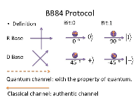

1959: Richard Feynman in his lecture "There's Plenty of Room at the Bottom" states the possibility of using quantum effects for computation.
1980: Paul Benioff described quantum mechanical Hamiltonian models of computers and the Russian mathematician Yuri Manin motivated the development of quantum computers.
1984: BB84 is published, the world's first quantum cryptography protocol by IBM scientists Charles Bennett and Gilles Brassard. 
2009: Researchers at Yale University created the first solid-state quantum processor.
2011: D-Wave Systems announced the first commercial quantum annealer, the D-Wave One, claiming a 128 qubit processor.
2012: The first quantum teleportation from one macroscopic object to another was reported by scientists at the University of Science and Technology of China in Hefei.
2013: Google announced that it was launching the Quantum Artificial Intelligence Lab, hosted by NASA's Ames Research Center.
2019: IBM launched IBM Q System One, its first integrated quantum computing system for commercial use.